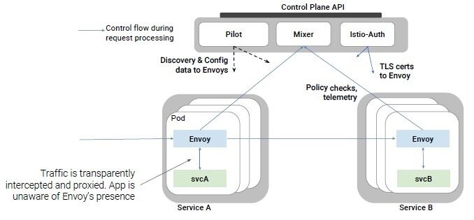

本文为翻译文章，点击查看原文。
本文原标题为：Istio目标是成为容器化微服务的网状管道
在精彩的软件容器世界中，原本早已解决的问题又有新的解决方案出现，给人有种恍惚的感觉。在许多情况下这些问题很久以前就得到了解决，但现代云原生架构的出现，推动部署更大规模的应用程序，这就需要新的工具和方法来管理这些服务。
微服务就是一个很好的例子。在此模型下，典型的应用程序或服务将被分解为可独立部署的功能模块，这些模块可以彼此分开扩展和维护，并且链接在一起以提供整个应用程序或服务的全部功能。
在使用容器开发微服务时，后者可能是比较棘手的部分。当所有组件可能分布在服务器节点集群中，并且它们的实例不断上线并被更新的版本替换时，如何将它们连接起来？在面向服务的体系结构（SOA）中，微服务可以被看作是进化的继承者，这种任务类似于企业服务总线（ESB）所处理的任务。因此，我们需要的是ESB的云原生版本。
这是一个相对较新的开源项目Istio旨在填补的工作。它被正式描述为服务网格，因为它的一部分与基础设施一起分布在它管理的容器旁边，并且它开始着手满足服务发现、负载均衡、消息路由、遥测和监控的要求，当然还有安全。
Istio源自IBM和谷歌之间的合作，实际上包含了一些现有的组件，特别是由打车服务公司Lyft开发的组件。它以某种形式存在至少一年，但最终在7月底达到1.0版的里程碑，这意味着它现在终于被认为足够成熟，可以作为生产基础设施的一部分来运行。
IBM研究员兼IBM云计算首席技术官Jason McGee告诉The Next Platform，云原生生态系统已基本确定容器作为核心打包和运行时构造，而Kubernetes则作为管理容器的编排系统。但McGee解释说，还有第三块谜题还在空中，Istio旨在满足这一要求。
“如何管理在容器平台上运行的应用程序或服务之间的交互？”McGee问道。 “如果您正在构建微服务，或者您有一组应用程序，那么应用程序之间的通信会出现很多有趣的问题。您如何了解到底是那些服务在交互，性能以及如何收集应用程序之间通信的数据，如何保护控制哪些服务可以相互通信，以及如何确保应用程序的安全，特别是在我们今天使用的更动态或分布式架构情况下，您可能在公有云或私有云上同时有组件。“
McGee说他几年前在IBM的团队已经开始研究这个问题了，当时他遇到了谷歌的同行并发现他们正走在同一条道路上，但IBM主要关注流量路由、版本控制和A/B测试方面，Google专注于安全和遥测。两者决定合并各自的努力成果，这样就诞生了Istio。
Istio由以下组件组成：
- Envoy，被描述为sidecar代理，因为它作为代理部署在每个微服务实例旁边。
- Mixer，它是一个核心组件，用于通过Envoy代理执行策略，并从中收集遥测指标。
- Pilot，负责配置代理。
- Citadel，负责颁发证书的中心化组件，也有自己的每个节点代理。
Envoy是由Lyft开发的组件，被McGee描述为“非常小的足迹，第4到第7层智能路由器”，它捕获与其配对的微服务的所有传入和传出流量、控制流量、应用策略和收集遥测信息。 Pilot是IBM提供的主要组件，作为部署在基础架构中的所有Envoy代理的控制平面。
“如果你想象在一个服务网格中，你可能有一百个微服务，如果每个服务都有多个实例，你可能有数百或数千个智能路由，你需要一种方法对它们进行编程，所以Istio引入了这个称为Pilot的东西。可以把它想象成程序员，所有这些路由器的控制平面。所以你有一个地方可以来编程这个服务网络，然后围绕数据收集进行遥测，围绕安全的证书管理，但从根本上你有这个智能路由层和这个控制平面来管理它， “McGee解释道。
Istio还有自己的API，允许用户将其插入现有的后端系统，例如用于日志记录和遥测。
根据谷歌的说法，Istio的监控功能使用户能够测量服务之间的实际流量，例如每秒请求数，错误率和延迟，还可以生成依赖关系图，以便用户可以看到服务如何相互影响。

通过Envoy sidecar代理，Istio还可以在每个服务调用时使用双向TLS身份验证（mTLS），加密并使用户能够在基础架构范围内对每个调用进行授权。
Istio的目的是，消除开发人员需要担心的许多问题：实例之间的通信安全问题，控制哪个实例可以与哪些实例进行通信以及提供执行诸如金丝雀部署之类的操作，如果是特定微服务代码的新版本发布了，那么只有一个实例的子集会被更新，直到您满意新代码的运行可靠为止
应该注意的是，其他服务网状平台已经存在，例如开源端的Linkerd或Conduit，而微软有一项服务，被称为Azure Service Fabric Mesh，目前作为其云平台的技术预览。此外，服务网格表示网络管道上方的抽象层，因此假设已经为每个容器实例配置了网络接口，IP地址和其他网络属性。这通常意味着，无论何时创建新的容器实例，部署微服务还将需要一个单独的工具来自动化网络配置。
然而，IBM希望Istio将成为云原生工具包的标准组成部分，正如Kubernetes所发生的那样，Kubernetes是基于Borg和Omega技术的，而这些技术是为谷歌自己的内部集群和其上运行的容器层而开发的。
“从社区的角度来看，我的期望是Istio将成为架构的默认部分，就像容器和Kubernetes已经成为云原生架构的默认部分一样，”McGee说。为此，IBM希望将Istio与其公有云提供的托管Kubernetes服务以及其内部部署的IBM Cloud Private堆栈集成在一起。
“所以，你今天可以运行Istio，我们支持今天在这两个平台上运行Istio，但期望应该是在不久的将来，我们将内置Istio，所以每当你使用我们的平台时， Istio组件集成在里面了，您可以利用它，并且不必负责部署和管理Istio本身，只需在您的应用程序中使用它即可，“McGee说。
谷歌已经添加了Istio支持，尽管它只是将其标记为alpha版本，作为托管服务的一部分，该服务在其云平台上的客户的Google Kubernetes Engine（GKE）集群中自动安装和维护。
Istio也获得了业内其他公司的支持，尤其是Red Hat，几年前Red Hat以Docker容器和Kubernetes为基础，重新设计了OpenShift应用程序平台。
Red Hat的Istio产品经理人称“红胡子”的Brian Harrington表示Red Hat打算将服务网格集成到OpenShift中，但Red Hat希望在提交之前能够看到改进的一些粗略的地方，例如多租户支持。
“Istio现在的目标是他们所谓的软多租户，也就是说，我们希望在组织内部可用，以便该组织内的两个不同的团队可以使用并信任它，前提是团队内只要没有一个人的行为过于恶意，大家都没有准备去影响其他人的服务。通过我们运行OpenShift Online的方式，我们让客户运行我们从未看过的代码，并且我们必须最终安排这两个客户并存，这是一个非常不同的多租户挑战，“Harrington解释道。
“我们需要对这个多租户功能有更高的信心;我们需要对性能和稳定性有更高的信心。在这些方面还没有看到有完美的解决方案，但是在进行规模测试和自动化一些回归测试时，我们看到了一些我们认为可以提供大量价值的地方，我们还在社区层面贡献了一个名为Kiali的项目，给出了Istio操作过程的可视化，这只是我们产品的一部分，“他补充道。
换句话说， Istio只是为那些希望构建云原生应用程序基础架构的用户提供的添加到选项菜单中的另一个开源工具。 像Red Hat这样的供应商将把它融入他们经过测试和支持的企业平台产品中，比如OpenShift，而其他供应商则希望自己混合搭配并构建它。